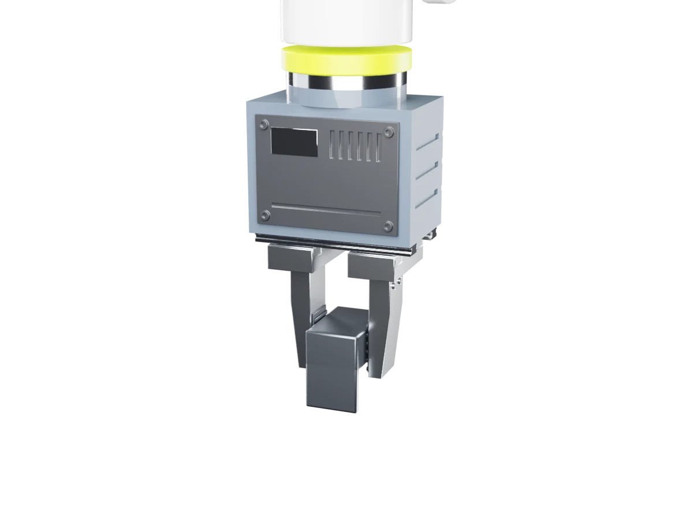

Piezas estampadas, aún calientes del troquel
Soportes de acero de 0,6 kg a 12 piezas por minuto, junto a la prensa. Los dedos llevan un inserto de carburo para que el aceite no haga resbalar la pieza.
AZ-E 80 M con dedos planos y inserto de carburo
| Pieza | acero · 0,6 kg |
|---|---|
| Cadencia | 12/min |
| Fuerza | 220 N |